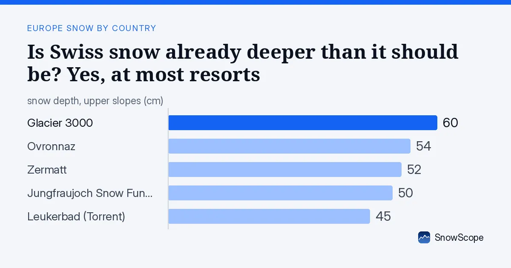
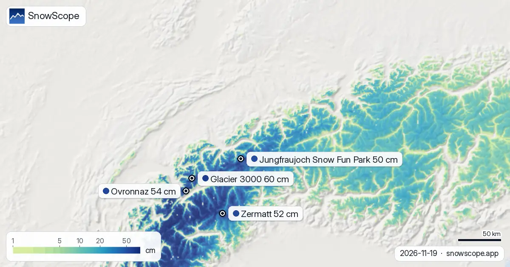

La neve svizzera è già più profonda del solito? Sì, nella maggior parte dei comprensori
Le montagne svizzere stanno trattenendo neve rara per metà novembre. A Glacier 3000, la profondità misurata di 60 cm è il doppio di quello che di solito vediamo a questo punto della stagione, e quattro dei cinque comprensori principali misurati sono al di sopra della loro media storica.
Le previsioni neve in tempo reale per Glacier 3000 nell'app SnowScopeAltezza neve, allerte powder e mappa 3D, gratis.
La neve è già abbondante per la stagione
La neve di novembre è scarsa nella maggior parte delle Alpi, ma la Svizzera fa eccezione in questo momento. L'acqua nevosa immagazzinata nelle montagne sopra i 2000 metri equivale a quello che vediamo nelle tre settimane migliori di gennaio. A Glacier 3000 (misurato a 2238 m), i 60 cm di neve al suolo rappresentano il 246 per cento di quello che normalmente misuriamo in questa data. Ovronnaz, a 1898 m, ha 54 cm, anche più del doppio della media. Anche a quote inferiori, la neve si accumula più velocemente di quanto la registrazione climatica suggerisce.
Questa profondità precoce è importante per l'approvvigionamento idrico. La neve autunnale e invernale precoce alimenta i fiumi e riempie i bacini attraverso lo scioglimento primaverile. Quando la neve di novembre è così profonda, segnala che il manto nevoso inizia la stagione con più acqua immagazzinata del solito. I 18210 chilometri quadrati di copertura nevosa nel dominio del modello svizzero rappresentano il 59 per cento dell'area mappata, una proporzione inusuale per metà novembre.
| Resort | Today | Normal for the date | Share of normal |
|---|---|---|---|
| Glacier 3000 | 59 cm | 24 cm | 246 % |
| Ovronnaz | 41 cm | 20 cm | 205 % |
| Zermatt | 221 cm | 31 cm | 713 % |
| Jungfraujoch Snow Fun Park | 67 cm | 74 cm | 91 % |
| Leukerbad (Torrent) | 24 cm | 17 cm | 141 % |

Dove è concentrata l'acqua nevosa
La neve più spessa si trova in alto. Sopra i 2500 metri, il modello mostra una profondità media di 27 cm su tutta l'area svizzera, e tutti i versanti sono ricoperti di neve. Tra i 2000 e i 2500 metri, la media è di 14 cm. Sotto i 2000 metri, la neve si assottiglia rapidamente: tra i 1500 e i 2000 metri, ci sono in media solo 7 cm. Il limite della neve si trova a 1300 metri; al di sotto, il terreno è per lo più nudo.
Le Alpi del Vallese contengono più neve rispetto a quello che è caduto. Negli ultimi 72 ore, quella regione ha accumulato 151 cm di neve fresca sulle vette alte. L'Oberland bernese ha registrato 99 cm nello stesso periodo. Queste zone sono dove la maggior parte dell'acqua è immagazzinata in questo momento.

Le cinque profondità misurate più alte
Glacier 3000 guida con 60 cm, seguito da Ovronnaz con 54 cm e Zermatt con 52 cm. Jungfraujoch Snow Fun Park ha 50 cm, e Leukerbad (Torrent) ha 45 cm. Tutti e cinque questi siti hanno ricevuto neve fresca sostanziale negli ultimi tre giorni: Glacier 3000 ha guadagnato 94 cm, Ovronnaz 79 cm e Zermatt 76 cm. Queste non sono misurazioni eccezionali; riflettono un'impulso a livello regionale di neve umida iniziato diversi giorni fa e ancora in movimento sulle Alpi.
Profondità della neve per fascia altitudinale
Tra i 500 e i 1000 metri, non c'è neve al suolo. Tra i 1000 e i 1500 metri, solo il 40 per cento dell'area è ricoperta di neve e la profondità media è solo di 1 cm. Il confine critico è a 1500 metri: al di sopra, inizia la copertura nevosa al 100 per cento e le profondità crescono costantemente con l'altitudine. Questa transizione netta è tipica di novembre, quando la troposfera è ancora calda alle quote basse ma già abbastanza fredda da mantenere la neve sulle vette.
Cosa viene dopo
Il modello prevede fino a 125 cm di neve fresca nei prossimi sette giorni, con il singolo giorno più pesante probabilmente il 22 novembre (38 cm). Nei prossimi tre giorni, i comprensori possono aspettarsi 55-87 cm di nuovo accumulo a seconda della posizione. Questo spingerà l'immagazzinamento totale di neve ben al di sopra del parametro di riferimento dei nove inverni su dieci. L'equivalente in acqua di quella neve fresca sarà significativo per il deflusso primaverile e i livelli dei bacini.
All'inizio di dicembre, il segnale di previsione si indebolisce. Il modello mostra solo 27 cm di neve fresca prevista tra il 27 novembre e il 3 dicembre, suggerendo che l'evento di neve principale è concentrato nella prossima settimana.
Trend in quattro giorni
La copertura nevosa in Svizzera è cresciuta di 1980 chilometri quadrati nelle ultime 24 ore e si è espansa di 5110 chilometri quadrati nell'ultima settimana. Il 16 novembre, Ovronnaz guidava il paese con 136 cm. Il 19 novembre, Glacier 3000 era passato al primo posto con 60 cm nel suo punto di misurazione. Questo cambio riflette la distribuzione irregolare della neve più recente: diverse regioni ricevono quantità diverse, e i siti di misurazione a diverse altitudini possono mostrare segnali diversi.
Consigli per sciatori
- Controlla il bollettino valanghe ufficiale prima di sciare fuori pista sopra i 2000 metri; la neve fresca bagnata su versanti ripidi comporta rischio di valanga. La neve nuova è pesante di contenuto d'acqua.
- La neve di inizio stagione sotto i 1500 metri è sottile e può nascondere massi. Rimani sulle piste segnate e sugli spazi noti se scendi sotto il limite della neve a 1300 metri.
- Sui ghiacciai alti (sopra i 2500 metri), i 27 cm di profondità media danno una buona base, ma il rischio di crepacci rimane; il viaggio in cordino e l'allenamento sono essenziali.
- Gli operatori dei bacini dovrebbero notare che la neve di questa settimana aggiungerà acqua di fusione significativa in primavera. L'acqua immagazzinata ora è al di sopra della norma dei nove inverni su dieci.
- Usa la mappa di SnowScope per trovare la neve più profonda alla tua quota scelta. Sopra i 2500 metri, tutti i versanti sono ricoperti di neve e stabili. Tra i 2000 e i 2500 metri, scegli versanti esposti a nord per profondità più affidabile.
Su questi numeri
Le altezze neve delle località sono la neve più alta sui pendii superiori secondo il modello neve di SnowScope (circa 1 km, calcolo del 19 novembre); sono stime per un'area, non una misura in un punto. I valori delle stazioni sono misure alla data indicata. Le previsioni possono cambiare. Leggi sempre il bollettino valanghe ufficiale prima del fuoripista.
Cita questo articolo
Per ricerca, didattica o stampa: numeri e grafici sono liberamente riutilizzabili con licenza CC BY 4.0 citando così.
SnowScope (2026), La neve svizzera è già più profonda del solito? Sì, nella maggior parte dei comprensori, https://snowscope.app/blog/it/2026/11/switzerland-rare-early-snow-19-november-2026.html, consultato il 2026-11-19
SnowScope (Atlas Labs). (2026, November 19). La neve svizzera è già più profonda del solito? Sì, nella maggior parte dei comprensori. SnowScope snow reports. https://snowscope.app/blog/it/2026/11/switzerland-rare-early-snow-19-november-2026.html
BibTeX
@misc{snowscope2026switzerlandrareearlysnow,
author = {{SnowScope (Atlas Labs)}},
title = {La neve svizzera è già più profonda del solito? Sì, nella maggior parte dei comprensori},
year = {2026},
month = nov,
howpublished = {\url{https://snowscope.app/blog/it/2026/11/switzerland-rare-early-snow-19-november-2026.html}},
note = {Published 2026-11-19 11:34 UTC; accessed 2026-11-19}
}· CC BY 4.0 · Metodi, dati e strumenti →
Glacier 3000: neve e temperatura per quota, quest'inverno vs lo scorso (strumenti) →
Segui Glacier 3000
Gratis: un messaggio quando arriva la neve e il meteo ogni mattina.
Altri bollettini neve

Mt. Baker a dicembre: 46 in (116 cm) di neve a metà montagna in un tipico 15 dicembre, e uno skipass da 98,80 $ dal lunedì al giovedì, venduto solo in giornata alla cassa.

Pianifica il tuo viaggio a Les Orres nel dicembre 2026 confrontando i prezzi dei pass settimanali con il nostro storico della neve di 46 inverni passati.